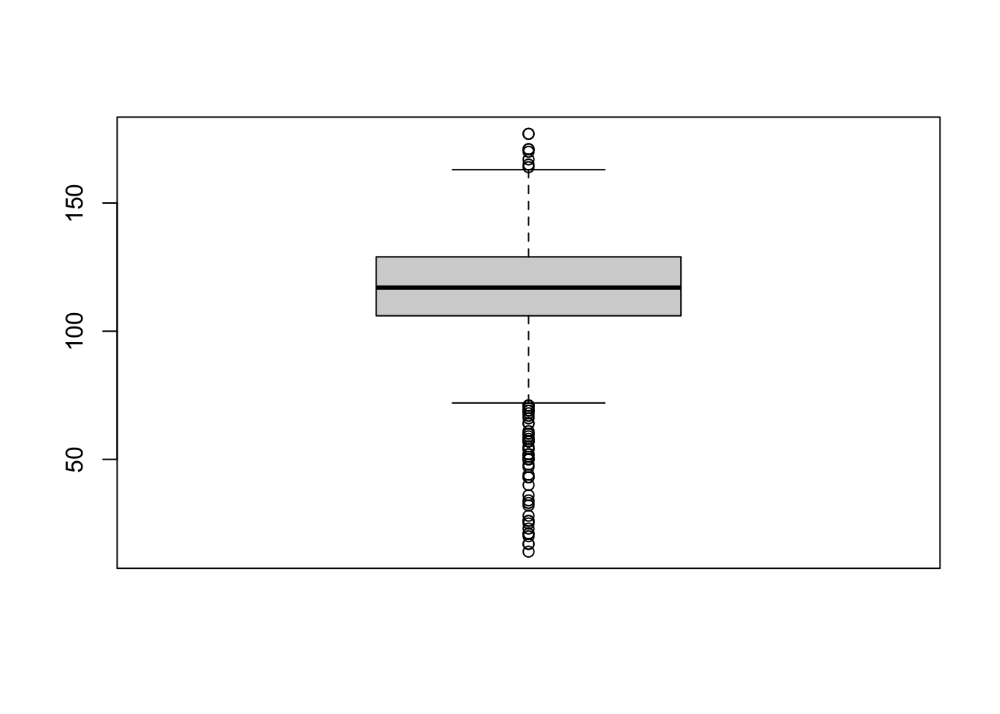
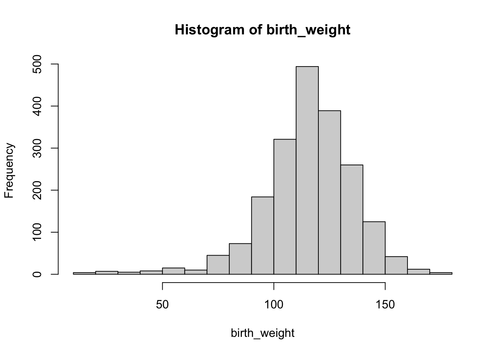
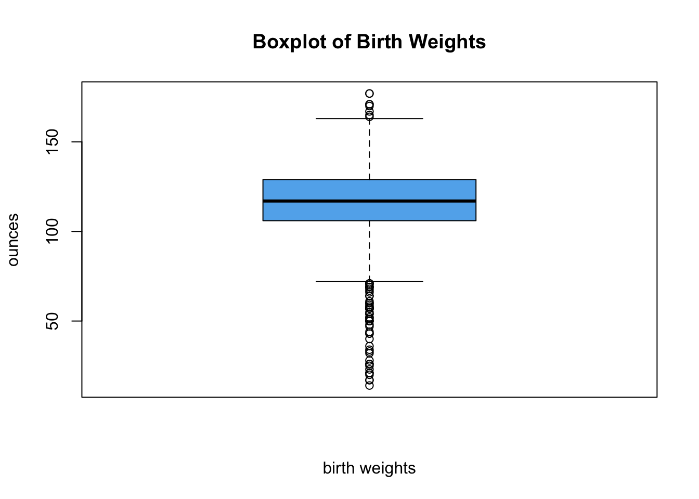
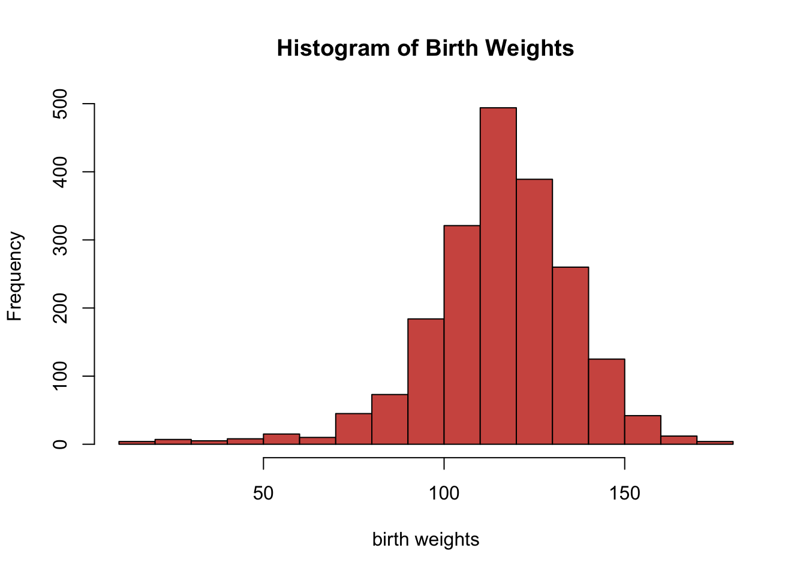
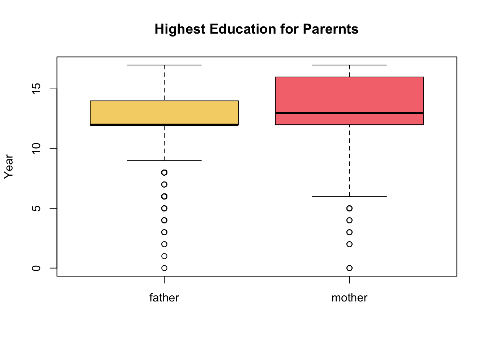
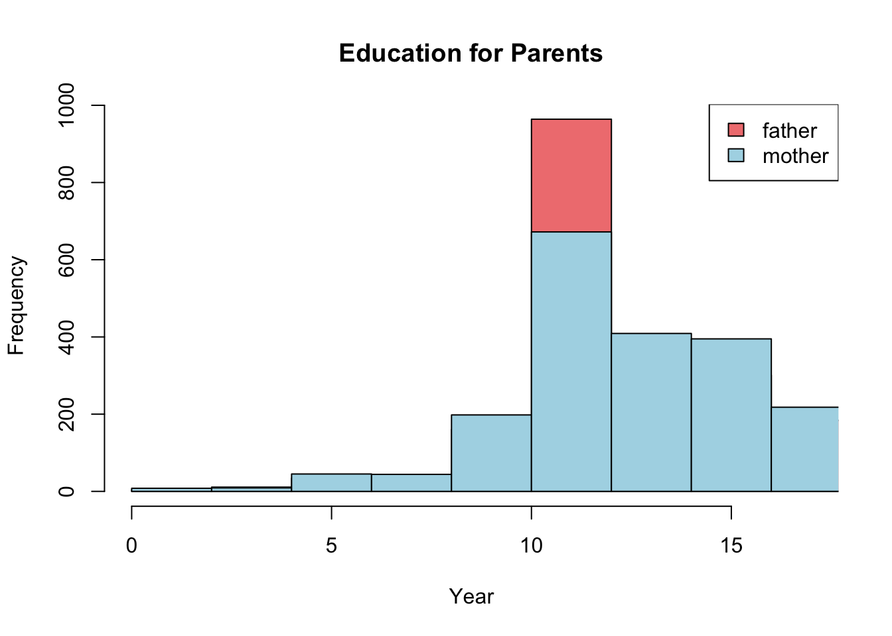
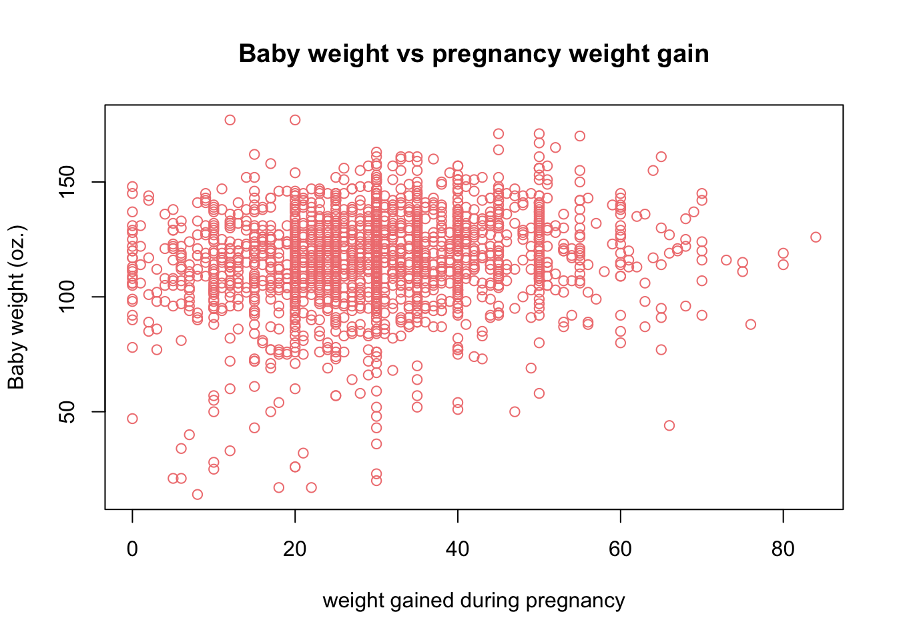

Filter(is.numeric,birth_dat)Summarizing Numerical Data
We will use the births data set to summarize and visualize numerical variables using the base R approach
Numerical data refers to data that can be measured and expressed as a number, such as age, height, weight, and temperature. Numerical data can be discrete or continuous
Single numerical variable
One way to extract all the numerical columns is using both Filter and is.numeric functions. Below are the first five rows of all the numerical columns in birth_dat
X weight Apgar1 Fage Mage Feduc Meduc TotPreg Visits Gained
1 1 116 9 28 34 6 3 2 10 30
2 2 126 8 30 18 12 12 1 14 50
3 3 161 8 28 29 12 12 3 14 65
4 4 133 9 26 23 8 9 3 10 8
5 5 119 8 30 19 12 12 2 12 20The names of the numerical columns can be obtained using colnames() function in combination with the above statement
[1] "X" "weight" "Apgar1" "Fage" "Mage" "Feduc" "Meduc"
[8] "TotPreg" "Visits" "Gained" We will only consider the weight variable from our dataset to demonstrate methods to summarize and visualize a numerical variable.
Functions for numerical summaries include, but not limited to,
| Function | Description |
|---|---|
mean() |
mean |
median() |
median |
mode() |
mode |
sd() |
standard deviation |
var() |
variance |
min() |
minimum |
max() |
maximum |
summary() |
Computes the following: Minimum ,1st Quartile, Median,Mean ,3rd Quartile,Maximum |
Next, we’ll save the values from weight column into a separate variable and compute several numerical summaries listed above
birth_weight <- birth_dat$weightmean(birth_weight)[1] 116.0536median(birth_weight)[1] 117min(birth_weight)[1] 14max(birth_weight)[1] 177summary(birth_weight) Min. 1st Qu. Median Mean 3rd Qu. Max.
14.0 106.0 117.0 116.1 129.0 177.0 While summary() give us a quick numerical summary of our distribution, it is important to also visualize the overall distribution using a plot such as a boxplot
boxplot(birth_weight)
or a histogram
hist(birth_weight)
From the histogram above, while the overall distribution of the birth weights is symmetrical there are outliers causing the distribution to be skewed to the left.
For boxplot() and hist() we used the default settings, while they are informative we can alter their appearance to be more professional.
For example, we changed the x-axis label and y-axis label using xlab,ylab arguments,respectively. We changed the title with main and the color of the boxplot with col. The col argument can take values such as red,blue or any HEX code, see ?boxplot for further customization.
boxplot(birth_weight,
main='Boxplot of Birth Weights',
xlab ='birth weights', ylab='ounces',
col='#61b1ed')
Tip
Search ‘color picker’ in Google and copy/paste the generated hex code
We can apply similar customization to our histogram
hist(birth_weight,
main='Histogram of Birth Weights',
xlab ='birth weights',
col='#d1584f',
breaks=20)
The hist function uses the Sturges method by default to determine the number of breaks on the histogram. We can manually change the number of breaks, but we should be careful not to specify a low or high number of breaks. Usually the default setting is appropriate for most scenarios.
Two numerical variables
We consider the following two numerical variables: Feduc and Meduc, which is the highest education for fathers and mothers in this dataset, respectively.
father_eduction <- birth_dat$Feduc
mother_education <- birth_dat$MeducWe can compare their distributions in a single plot as we did in Section 2 with boxplots
boxplot(father_eduction,mother_education,
names = c('father','mother'),
col=c('#f5d376','#f5767c'),
main = 'Highest Education for Parernts',
ylab = 'Year')
For boxplots its pretty straight forward to compare two numerical distributions using the syntax boxplot(v1,v2,...). For histograms it requires a bit more work.
We start by creating a histogram for the first variable, then creating another histogram for the second variable but using the argument add=TRUE. We must specify a unique color for each histogram representing the variables. In order for both of the histograms to fit properly on the same plot we must take into account the lowest and highest values among the multiple numerical variables.
Lastly, we must specify a legend to appropriately distinguish the multiple histograms using the function legend().
hist(father_eduction, col='lightcoral',
xlim=c(low_x,high_x),
main='Education for Parents', xlab='Year')
hist(mother_education, col='lightblue', add=TRUE)
legend('topright', legend = c('father', 'mother'),
fill=c('lightcoral', 'lightblue'))
Warning
When using legend() it is important that you specify the correct ordering of colors for each group, otherwise the legend would be incorrect. For example, in our first histogram we chose “lightcoral” to represent “father” and “lightblue” to represent “mother” distributions. Which is why we used the arguments: legend=c('father','mother'), fill = c('lightcoral','lightblue') in that order
We can also consider a scatter plot to visualize the relationship between two numerical variables. We consider the two numerical variables Gained and weight. Gained describes the weight gained during the pregnancy term and weight describe the weight of the baby at birth.
plot(x = birth_dat$Gained,y = birth_dat$weight,
main = 'Baby weight vs pregnancy weight gain',
xlab = 'weight gained during pregnancy',
ylab = 'Baby weight (oz.)',
col='lightcoral')